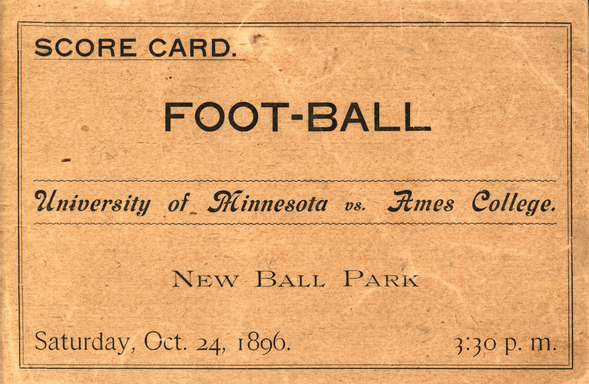

I am a junior at the University of Illinois Urbana-Champaign studying Information Sciences.
I am an Information Sciences student interested in pursuing a career in information security. Through my internship in Rush Hospital’s Information Technology department, I gained hands-on experience with security tools, including security information and event management (SIEM) systems, vulnerability management platforms, endpoint protection, and identity and access management tools. This experience strengthened my interest in protecting systems and data while building my technical and problem-solving skills.

Image from Iowa State University Library Digital Collections.
This is a digitized football program for Iowa State's game against Minnesota on October 24, 1896. The program has twelve pages and includes player photographs and advertisements. The first page calls Iowa State Ames College.
I picked this object because I am interested in college football. I thought it was cool to see what a football program looked like in 1896 and compare it to what fans see today.
The library marks this object as in copyright and provides access for education and scholarship. I am using this image for a class assignment.